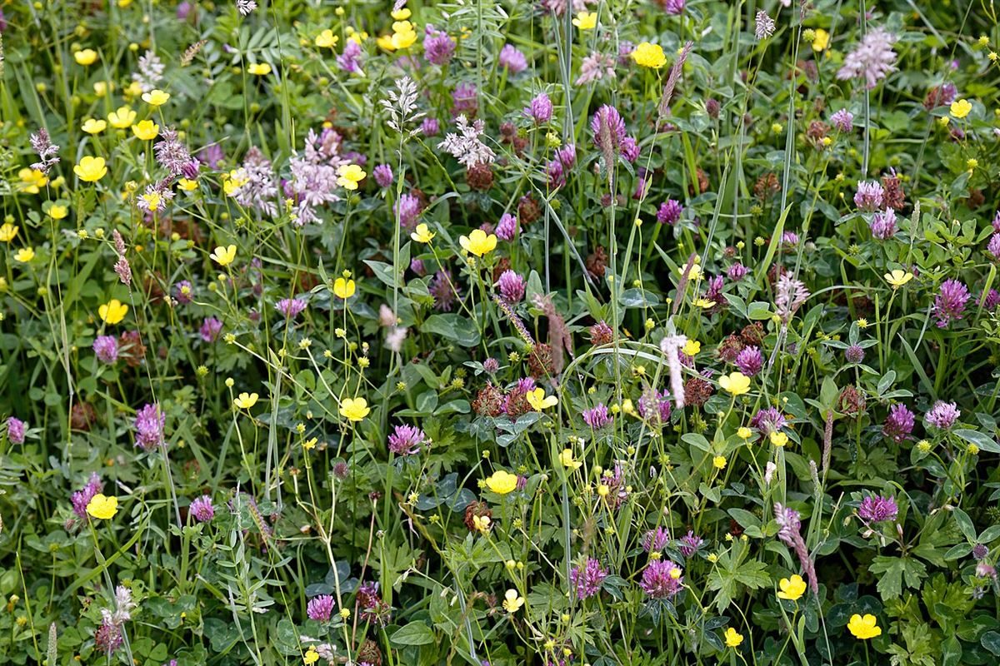
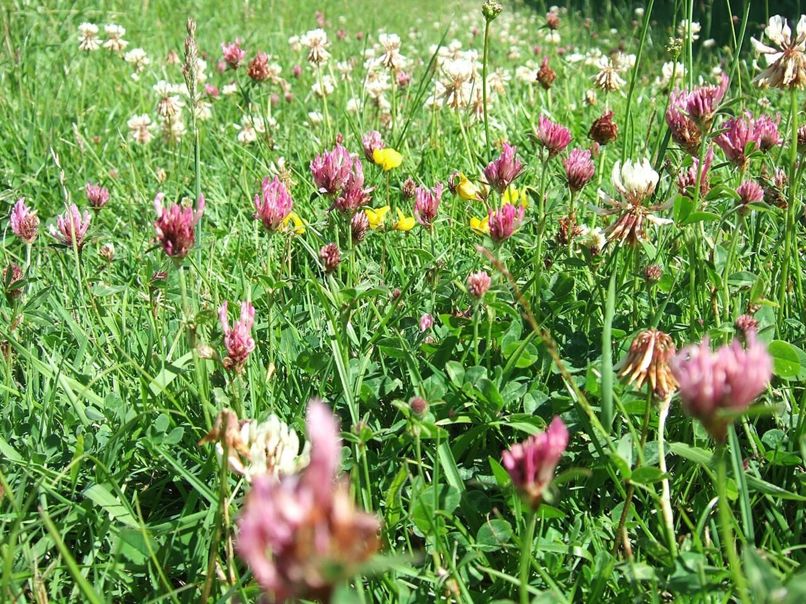
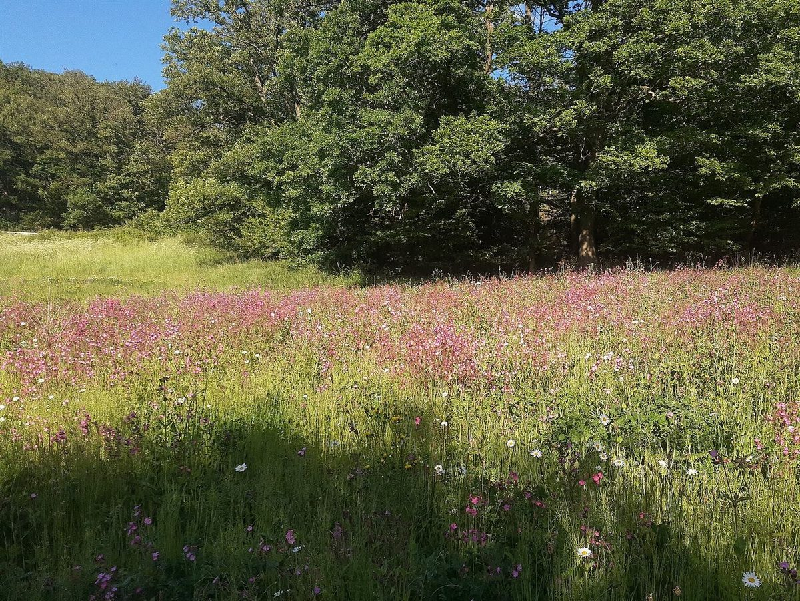

お菓子のアトリエHONEY
洋菓子・カフェ / 群馬県高崎市

群馬県高崎市のお店「お菓子のアトリエ HONEY」のご案内ページです。営業時間やメニューなど詳しいことは準備中。まずはInstagramをのぞいてみてください。
制作側の連想
「HONEY」から、蜜の色見本を思いついた
このページのテーマ「蜜源の花ごよみ」は、制作側の連想で、お店の理念・由来とは無関係です。店名の響きから、花の蜜は咲く花によって色が違うものだと思い出し、花の写真と琥珀色の見本を並べてみました。お店のお菓子や材料とは関係がありません。
花ごよみ(イメージ)
四つの花と、四つの琥珀色
写真は高崎市の風景ではなく、国外・撮影地不明のフリー素材です。色の名前は制作側の想像です。
- 一

クローバーの草地(イメージ) クローバー
蜜の色のイメージ: 明るい淡琥珀
白と赤の花が咲く草地。蜜の色は淡く、軽やかな金色を想像しました。
- 二

ラベンダー(イメージ) ラベンダー
蜜の色のイメージ: うす紫を帯びた琥珀
紫の花穂。香りの高い花から、少し深みのある蜜色を連想しました。
- 三

ひまわり(イメージ) ひまわり
蜜の色のイメージ: 濃い黄金色
夏の空に向く大きな黄色い花。いちばん濃い黄金色を当てはめました。
- 四

野の花の草地(イメージ) 野の花
蜜の色のイメージ: ばらいろの混ざる琥珀
さまざまな花が混ざる草地。ひと色に決まらない蜜色を想像しました。
ご案内
お店のこと(確認できたものだけ)
| 所在地 | 〒370-0021 群馬県高崎市西横手町595-1 |
|---|---|
| 電話 | 027-329-5693 |
| 営業時間 | 準備中 |
| 定休日 | 準備中 |
| ご予約 | 準備中 |
| 駐車場 | 準備中 |
| SNS | Instagram @okashinoatoriehani |